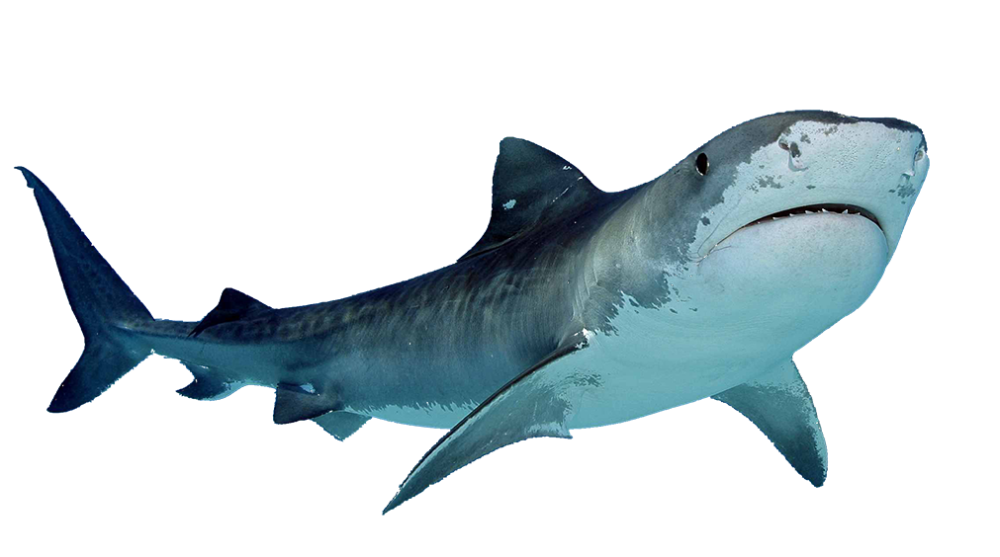

Mar
O mar é imprevisível, assim como pode curar e trazer vida, também pode causar destruição e morte.
Mas não há nada mais belo que o inicio e o fim de ciclos, pois é assim que funciona o ciclo da vida.
Sentimentos também são imprevisíveis como o mar; agitados, complexos, e muitas vezes assustadores,
mas para ver as ondas e se banhar nas águas que te abraçam e necessário enfrentar esse medo,
mesmo que aos poucos.
